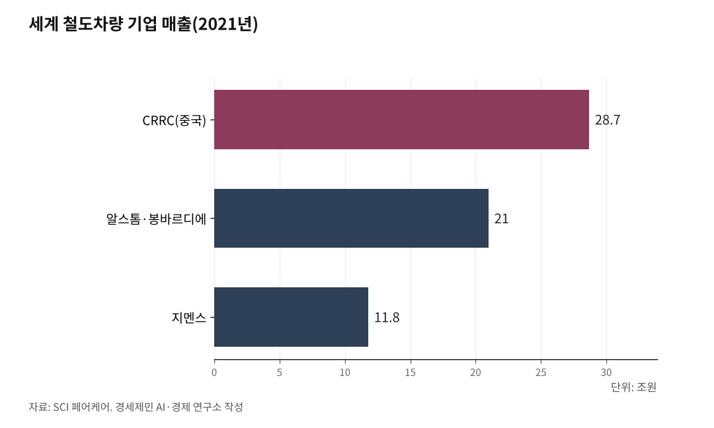

[127년 한국철도⑭] 사던 나라에서 파는 나라로… 이제 부품·유지보수로 속을 채운다
순수 국산 KTX-청룡·KTCS 신호까지, 세계 네 번째 고속차량 기술
세계 시장 249조원, 완성차 넘어 부품·신호·유지보수로 판 넓힌다
차량·신호 국산화 이어 부품까지 자립하면 진짜 K-철도 선다
인하대 해양AI융합센터 김갑봉 연구교수(물류학)│한국은 오랫동안 고속열차를 사서 썼다. KTX 첫 차는 프랑스 알스톰 기술이었다. 그 한국이 이제 순수 국산 고속열차 KTX-청룡을 만들고, 신호까지 국산화해 밖으로 판다. 세계에서 네 번째로 고속차량 기술을 갖춘 나라의 자부심이다. 사던 나라에서 파는 나라로 바뀐 큰 성과 위에, 이제 완성차를 넘어 부품과 유지보수까지 국산으로 채우는 과제가 남았다.

1. 사오던 것을 우리 손으로
성과는 분명하다. 2004년 KTX는 프랑스 알스톰 기술로 달렸고, 그 기술 이전에도 핵심 부품은 빠져 있었다. 산·학·연이 매달린 끝에 KTX-산천으로 세계 네 번째 고속차량 기술 보유국에 올랐고, 동력분산식 KTX-이음을 거쳐 순수 국산 KTX-청룡까지 왔다. 최고 시속 320km로 국내에서 가장 빠르다.
눈에 안 보이는 신호도 국산화했다. 한국형 열차제어시스템(KTCS, Korean Train Control System)이 그 자리를 채웠다. 고속선용 KTCS-2는 유럽 표준을 기반으로 만든 국산 기술로, 외국산 신호를 개량하는 값에 견줘 1조2149억원을 아낀다. 차량과 신호를 모두 우리 손으로 만든 나라는 많지 않다. 여기까지는 자랑할 만하다.

2. 세계 시장 속 한국의 자리
이 성과를 세계 시장에 놓고 보면 한국의 자리가 드러난다. 세계 철도시장은 약 249조원, 그중 철도차량과 유지보수가 159조원으로 3분의 2다. 이 큰 시장을 소수 거인이 나눠 갖는다. 독일 통계기관 SCI 페어케어를 보면 중국 국영 CRRC가 매출 28조7000억원으로 1위, 알스톰·봉바르디에가 21조원, 지멘스가 11조8000억원으로 뒤를 잇는다(2021년 기준). 반면 현대로템의 세계 신조 차량 점유율은 약 2%, 순위로는 10위권이다.
1위 CRRC의 힘은 거대한 내수에서 나온다. 정부가 철도망을 대대적으로 깔아 세계 최대 시장을 안에 두고, 현지화율 70%를 요구하며 자국 산업을 키웠다. 규모가 경쟁력인 산업에서 한국의 내수는 좁다. 그런 조건에서도 빅3에 이어 세계 열 손가락 안에 든 것이 한국 철도차량의 저력이다.
완성차가 시장의 전부도 아니다. 철도차량 시장 159조원에는 차를 파는 값만이 아니라 오래 이어지는 유지보수가 함께 담겨 있다. 실제로 현대로템의 우즈베크·이집트 수출도 차량 공급에 유지보수가 함께 묶였다. 완성차와 유지보수, 그 안의 부품이 한데 얽혀 움직이는 시장이다.
3. 정부가 함께 연 수출길
수출에는 정부의 뒷받침이 함께했다. 우즈베키스탄 첫 수출도, 이집트 전동차도 정부의 대외경제협력기금(EDCF) 차관이 길을 열었다. 고속철 기술을 가진 나라들이 자국 기업의 수주를 위해 양허성 자금을 대는 것은 국제 관례다. 다만 재정 지원과 함께 기술과 값 자체의 경쟁력을 키우는 일이 과제로 남는다.
그사이 세계 1위 CRRC는 값싼 값을 앞세워 한국 안방까지 들어와, 수도권 트램 입찰에 뛰어든 바 있다. 전문가들은 철도산업기본법 등을 고쳐 일정 비율의 국산 부품 사용을 의무화하자고 지적한다. 완성차를 파는 힘과 함께, 국내 시장을 지키는 안전판도 갖추자는 것이다.
4. 부품, 아직 남은 과제
더 깊은 빈틈은 알맹이에 있다. 완성차는 2017년부터 수출이 늘어 2020년 5460억원 흑자를 냈다. 그러나 그 안에 들어가는 부품은 거꾸로다. 철도차량 부품 무역수지는 2018년 적자로 돌아섰고, 2020년 수출 940억원, 수입 1855억원으로 914억원 적자다. KTX-이음도 부품 국산화율이 87%에 그쳐, 고부가 전장품과 차축베어링 같은 핵심 13%는 사 온다. 차축베어링은 지금도 100% 수입이다.
부품 산업은 영세하다. 국내 철도차량 부품사 95곳 가운데 84%가 종업원 50명 미만이고, 부품 내수시장은 4300억원에 그친다. 해외 대비 기술 격차는 4.9년이다. 완성차를 잘 팔수록 부품 국산화의 값어치도 커진다. 핵심 부품을 안에서 만들수록 수출의 알맹이가 국내에 더 남기 때문이다.
5. 진짜 K-철도의 조건
과제도 제시된다. 코레일 철도차량부품개발사업단은 완성차 수출에만 기대는 패턴에서 벗어나 부품이 독자적으로 해외에 나가는 '독립 시장'을 세워야 한다고 제언했다. 국가 연구개발로 부품 15종을 국산화해 해외 대비 기술 격차를 4.9년에서 2년으로 좁힌다는 목표도 함께 내놨다.
사업단은 국가 브랜드 '코리아 레일'을 만들어 검증된 부품사에만 쓰게 하고, 차량·신호·부품을 묶어 파는 방안도 꼽았다. 해외 대형 부품사의 반값 공세를 견디려면 부품 전문 중견기업을 길러야 한다는 것이다. 정부가 재정으로 뒷받침해 강소 부품기업을 키우자는 제안이다.
사던 나라가 파는 나라로 온 것은 큰 걸음이다. 완성차 뒤에는 부품과 신호, 유지보수라는 더 큰 시장이 남아 있다. 그 속을 국산으로 채우는 일이 파는 나라가 풀어야 할 다음 과제다.
※ 이 기사는 AI 프로그램 클로드를 활용해 작성했습니다.
참고문헌
· "프랑스가 점령 했던 국내 철도…열차 이어 제어시스템도 국산화", 서울경제, 2025.7.1., https://www.sedaily.com/article/14085699
· "[Top 10 Korea] 글로벌 철도 차량 제조사 매출액 1위는 중국의 CRRC", 컨슈머포스트, 2021.8.31., https://www.consumerpost.co.kr/news/articleView.html?idxno=302325
· "매년 30%대 급성장 수소철도시장 유럽·中·日 뛰는데, 한국은 제자리", 중소기업신문, 2024.10.27., https://www.smedaily.co.kr/news/articleView.html?idxno=307443
· "[이슈] '철車부품업계 K-브랜드 입고 해외시장 공략해야'", 철도경제신문, 2022.10.6., https://www.redaily.co.kr/news/articleView.html?idxno=4385
· "현대로템, 우즈벡에 K-고속철 사상 첫 수출", 현대로템, 2024.6.14., https://www.hyundai-rotem.co.kr/ko/company/press/details.do?seq=2206
· "국토부 24일 '2026 철도의 날' 기념식 개최…\"세계를 여는 K-철도\"", 서울경제, 2026.6.23., https://www.sedaily.com/article/20059031
· "현대로템, 이집트 전동차 및 현지화 사업 수주", 현대로템, 2022.8.25., https://blog.hyundai-rotem.co.kr/735
· "[보고서] EN12080 대응 철도차량용 차축베어링 국산화 기술개발", 한국과학기술정보연구원(KISTI) ScienceON, https://scienceon.kisti.re.kr/srch/selectPORSrchReport.do?cn=TRKO201900001933
#한국철도127년 #K철도수출 #KTX청룡 #KTCS #현대로템 #CRRC #철도차량시장 #부품무역수지 #부품국산화 #차축베어링